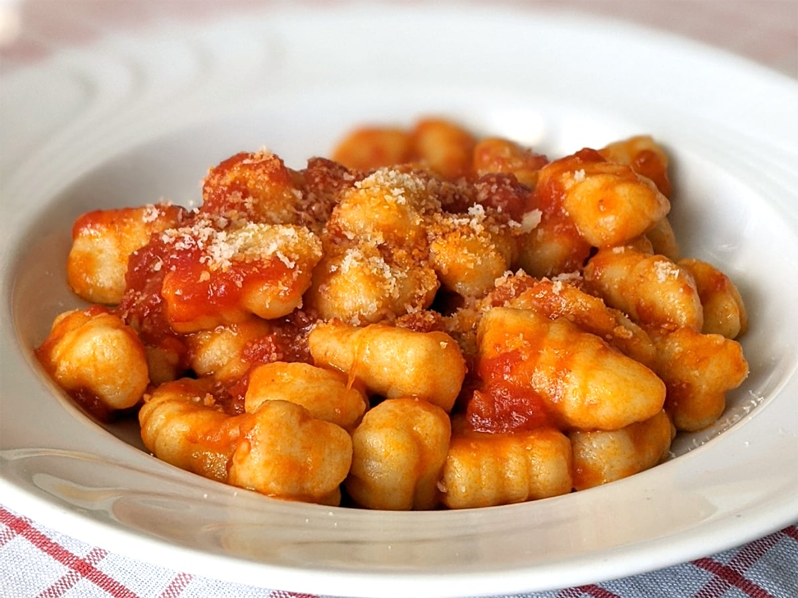

Gnocchi

Description
Gnocchi are a varied family of dumpling in Italian cuisine. They are made of small lumps of dough composed of semolina, ordinary wheat flour, egg, cheese, potato, breadcrumbs, cornmeal or similar ingredients, and possibly including herbs, vegetables, and other ingredients.
Ingredients
- Flour
- Eggs
- Salt
- Water
- Olive Oil
Steps
- lay the flour out on a bench and crack and egg into it and a pinch of salt
- Kneed it all together
- Slowly add more flour until it is only partially sticking to your hands
- Roll the dough into multiple snacks and cut them into gnocchi pieces
- Boil the Gnocchi in water until they rise